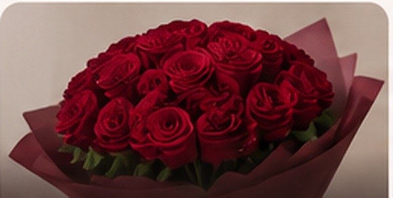
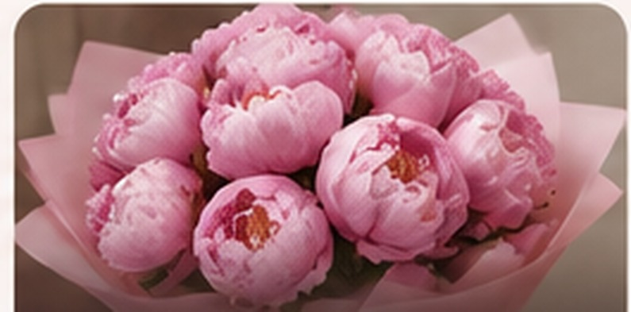
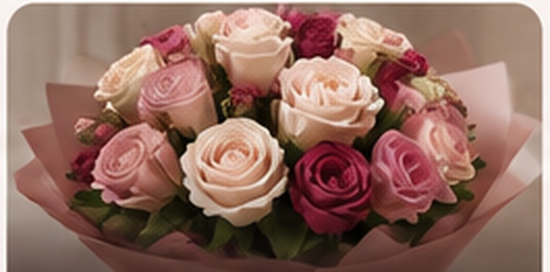
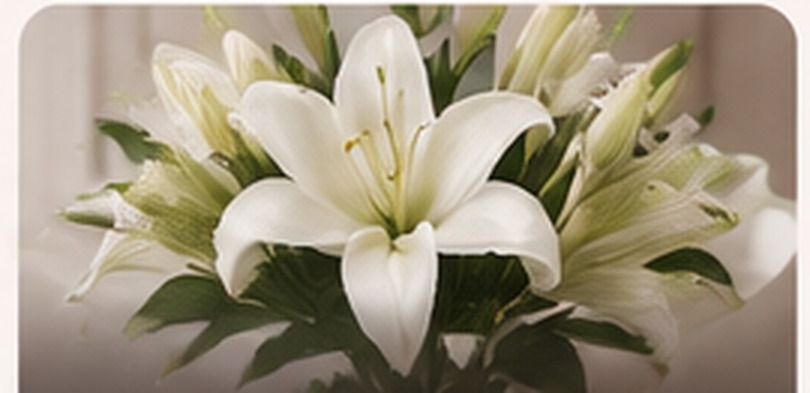
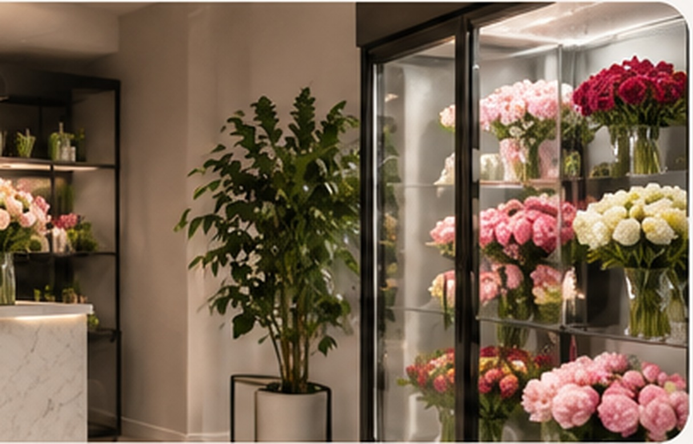

КЛАССИКА
01МАГАЗИН ЦВЕТОВ И РАСТЕНИЙ
Букеты, цветочные композиции и искусственные растения для дома, подарков и особенных моментов.
ВЫБЕРИТЕ СВОЁ
От выразительного букета до декоративного растения, которое дополнит интерьер. Посмотрите основные направления ассортимента.
ЦВЕТЫ И КОМПОЗИЦИИ
Вдохновение для выбора. Фотографии на этой странице демонстрационные и не являются подтверждением наличия конкретных букетов.




Ассортимент, стоимость и наличие уточняйте непосредственно в магазине.
ДЕКОРАТИВНАЯ ЗЕЛЕНЬ
Искусственные растения помогают добавить интерьеру природные акценты без необходимости подбирать место с подходящим освещением и регулярно ухаживать за живой зеленью.
Уточнить ассортимент в магазинеО МАГАЗИНЕ
Магазин «Комплимент» — место, где можно подобрать цветы и искусственные растения. Выберите направление, которое вам интересно, а наличие и подробности уточните у сотрудников магазина.
Открыть карточку магазина
ЦВЕТЫ · РАСТЕНИЯ · ДЕКОРВАШ ЦВЕТОЧНЫЙ ВЫБОР
Посмотрите расположение и контакты магазина «Комплимент» на Яндекс Картах.
КОНТАКТЫ
Адрес и актуальные способы связи смотрите в карточке организации на Яндекс Картах.
Открыть Яндекс Карты